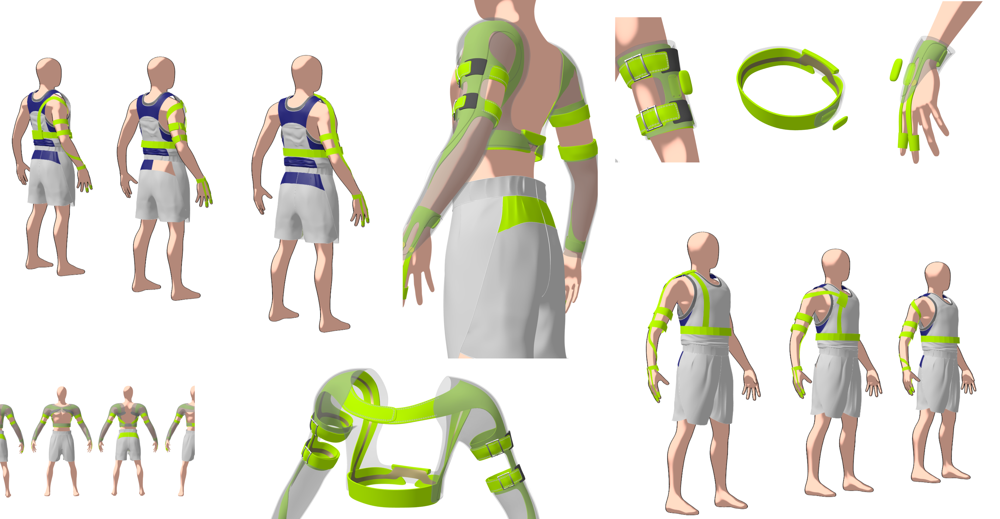
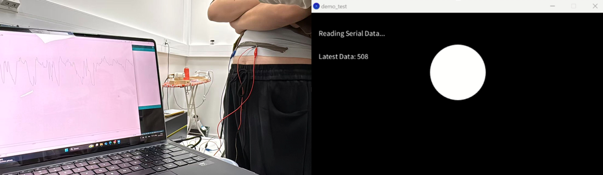

Protype Experimental Validation
The project progressed through multiple rounds of garment prototyping, hardware testing, interaction design, and user feedback. Based on user feedback, we have designed several sketches for the prototype.
Garment Iteration
Early versions integrated sensors into a single garment. Later versions separated the system into modular parts to improve comfort and usability.
Sensor Testing
Respiration and sEMG sensors were tested for real-time response, signal stability, and interaction accuracy.
User Feedback
Feedback highlighted the importance of comfort, accurate sensor placement, breathability, and ease of wearing.

We especially conducted integrated testing of the stretchable respiration and sEMG sensors and successfully demonstrated their interaction with the game environment. To clearly demonstrate the breathing functionality, we monitored respiration signals and developed a simple ball game. In this testing, inhalation causes the ball to rise, while exhalation causes it to fall. During the tests, group members wore the stretchable respiration sensor around their abdomens. The real-time sensor signal accurately captured the user's breathing pattern and was used to control the vertical movement of the training ball (later replaced by game characters). The test results show that the sensor has a low response delay and provides stable signal acquisition. Both deep and rapid breathing patterns can be accurately detected, while the wearable design remains comfortable for the user during operation.

After wearing the sEMG sensor, the trained Logistic Regression model is used to identify the following in real time: Relaxed state (0) and Contraction state (1). Active muscle contractions can reliably trigger the shooting action, while the relaxed state does not produce false triggers. Continuous muscle contractions enable sustained attacks, and multiple participants were able to control the game reliably after a short period of practice. As a result, both sensors demonstrate good real-time performance, stable signal acquisition, and smooth interaction, meeting the requirements for interactive training applications.

Project Demonstration
Below is a short demo video to show our final prototype.
Challenges
Future improvements could focus on wireless communication, sensor washability, improved comfort, privacy protection, and more advanced signal processing. We also created design concepts and sketches to explore the future commercialization of the prototype and its potential form as a consumer product.
Wireless System
Reduce cable limitations and make the wearable experience more natural.
Wearability
Improve breathability, adjustability, and long-term comfort for different users.
Signal Processing
Improve filtering and classification accuracy for real-world use conditions.